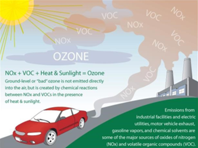
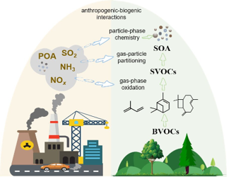

Volatile organic compounds
Tropospheric ozone
Organic aerosol
ABOUT EASE
Since the industrial revolution, fossil fuel combustion has been a major source of air pollution and greenhouse gases, drawing widespread attention from atmospheric scientists and air quality managers. However, as an effort to mitigate climate change, fossil fuel combustion is being reduced in many countries. This trend seems to be accelerating, such as the ambitious rollout of electric vehicles in many countries. As a result, scientists found that volatile chemical products outweigh transportation in emission of organics in the industrialized cities of the United States. The emission flux of monoterpenes from using personal care products in New York City was comparable to that of a summertime forest. In Hong Kong, indoor cooking contributes as much to ambient organic aerosol as vehicle emissions, and many environmentally relevant species, e.g., formaldehyde and monoterpenes, present indoors with higher concentrations than outdoors. These non-combustion air pollution sources that are emerging with reduction of fossil fuel emissions can be classified as emerging air pollution. There is growing evidence that emerging air pollution makes considerable contributions to criteria air pollutants, e.g., ozone and fine particles (PM2.5), and may have significant health and climate effects. We are committed to projects on Emerging Air pollution and Sustainable Environment (EASE).